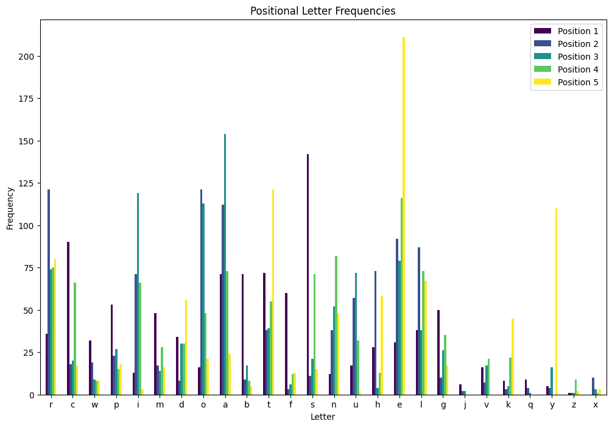
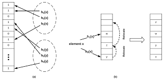

Wordle solver
My attempt at solving the game.
I'd been playing Wordle since 2022 and kept making mistakes I knew a computer wouldn't make — guessing words that couldn't be the answer, wasting a turn on a letter I'd already ruled out. After 3Blue1Brown's video on solving it with information theory, I wanted to try it myself, but in a direction I'd actually learn something from. So the goal became two things at once: minimize guesses, and use it as a real introduction to reinforcement learning.
Reinforcement learning agent
The core is a Q-learning agent that learns from both positive and negative rewards. The reward structure weights correct letters in correct positions heavily, and biases hard against guessing letters already known to be absent.
This is the part with the most room left in it. The reward shaping works, but the parameters are undertuned, and I suspect a good chunk of the remaining gap to optimal is sitting right there.
Probabilistic word selection
Some exploratory analysis turned up a useful asymmetry. Of roughly 15,000 valid guesses, a subset of about 3,000 common words is the answer around 85% of the time. The full list is what you're allowed to guess; the common list is what you should expect.
So candidates get ranked by that prior, combined with which letters appear in which positions most often across the answer set.

Cuckoo filter
Every guess requires checking, thousands of times, whether a candidate word is still valid given the constraints so far. That's a membership query — asked constantly, on a fixed set, where a rare false positive costs nothing much.
Cuckoo filters fit that shape exactly. They're a space-efficient probabilistic structure introduced by researchers at CMU in 2014, similar in spirit to a Bloom filter but supporting deletion and generally better lookup performance. I implemented it in C++ for speed and called into it from the solver.

Where it landed
It solves in 4.4753 guesses on average.
The obvious next lever is the opening word. Right now it opens with words the NYT rates 97+, which is a reasonable heuristic and definitely not an optimal one. A proper expected-information calculation over the first guess is the single highest-value thing left to do, followed by actually tuning the agent's parameters rather than leaving them where they first worked.